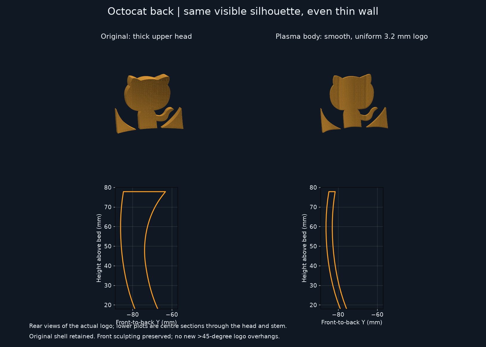
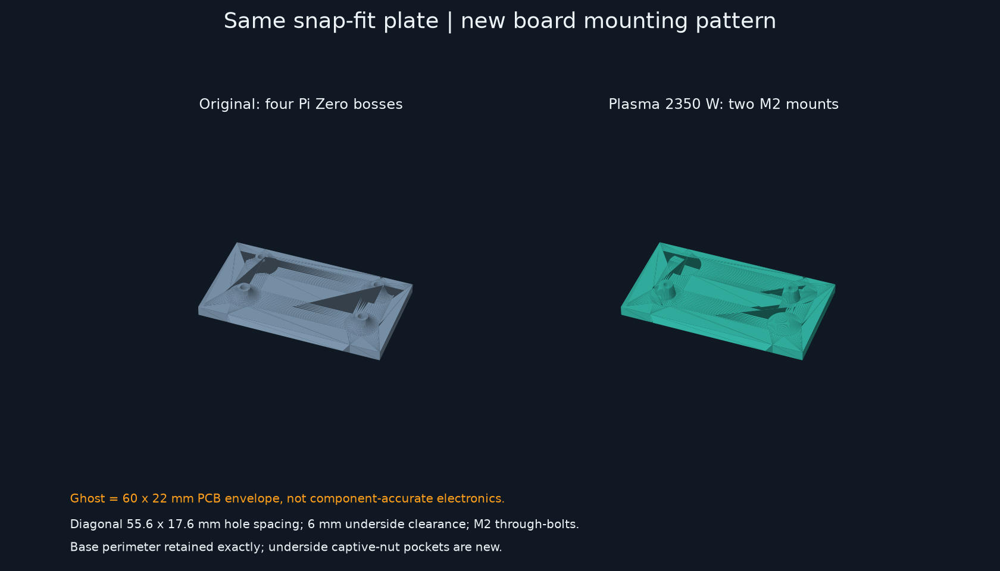
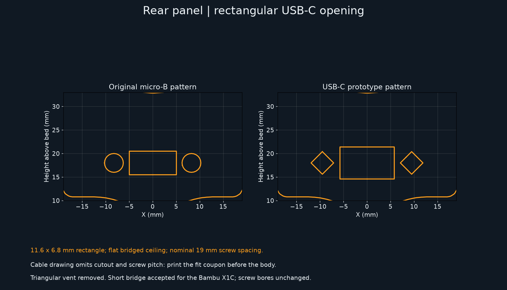

Actual STL-derived comparison renders, not concept illustrations. Original Pi Zero models are preserved.
Plasma holder STL · Plasma body STL · USB-C fit coupon STL
USB-C fit is provisional: the cable illustration omits mounting pitch and cutout dimensions. Print the coupon before the body. The rectangular opening uses a short bridge, with no triangular vent above it.

The Plasma body has a 3.2 mm front-to-back logo wall, following the unchanged sculpted front. The ridged back and thick upper wedge are removed. Measured depth is 3.17–3.26 mm across 2,266 samples, excluding edge bevels. No new overhangs above 45 degrees are introduced.

60 x 22 mm PCB, two diagonal mounting holes and 6 mm underside clearance. The translucent board is a reference envelope only.

11.6 x 6.8 mm rectangular aperture with a flat bridged ceiling; nominal 19 mm screw spacing. The body retains its original base and stalk interfaces.
Printing and assembly notes · Credit-lamp implementation plan